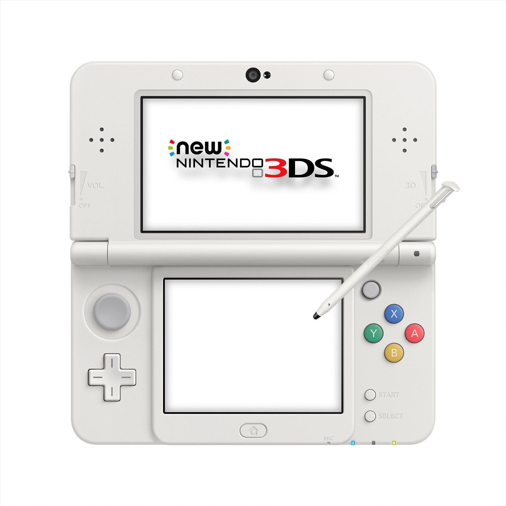
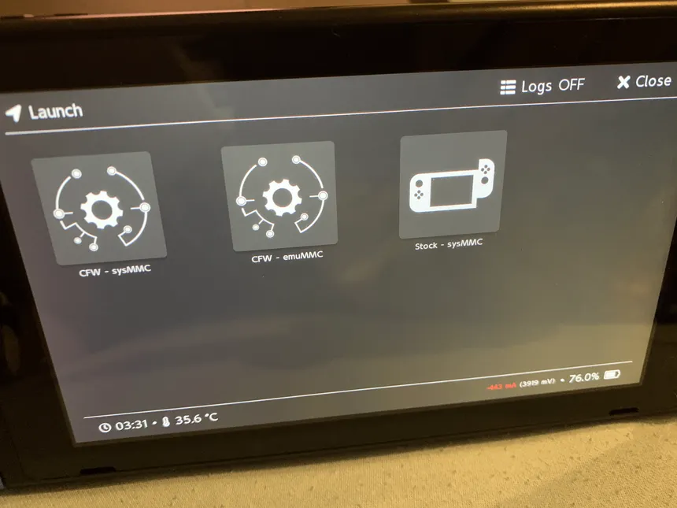
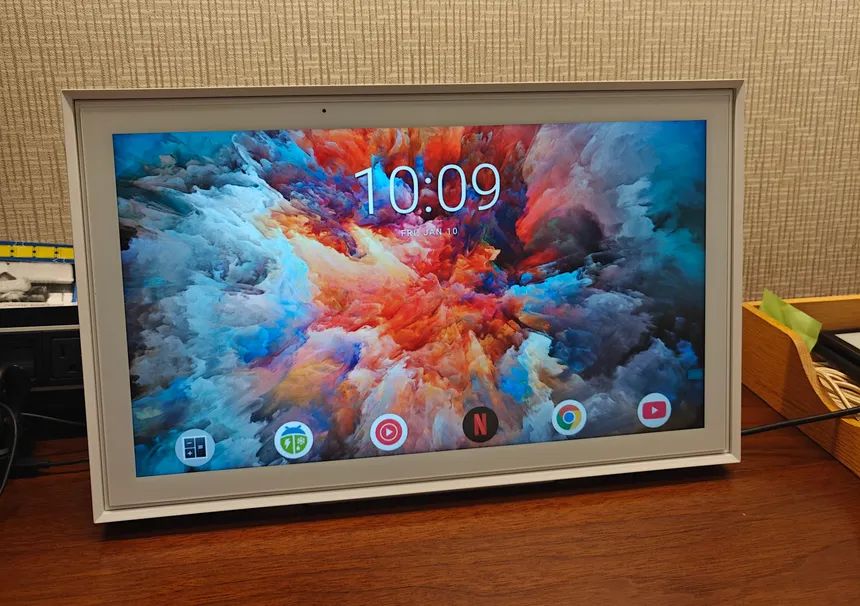
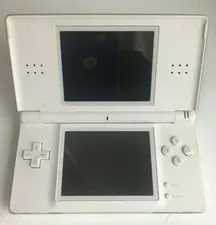
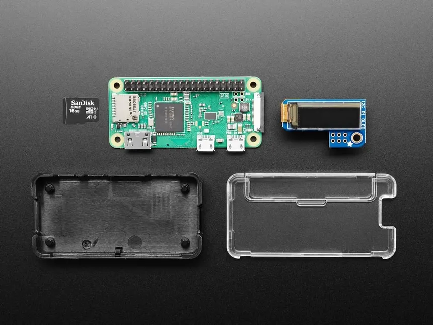
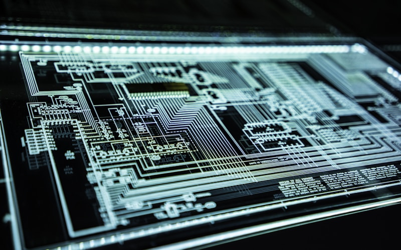
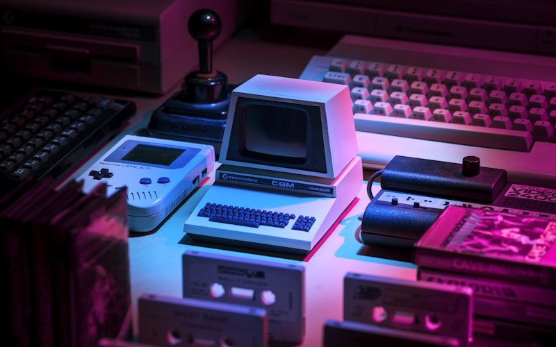

Fun
Jailbreaks, custom firmware, and hardware hacks on devices built to stay locked, plus everything else I'm into.
Devices I've broken into
Dopamine Jailbreak — iPhone 7, iOS 15.8.3
Deployed a rootless jailbreak on iOS 15.8.3 using the Dopamine exploit chain, which leverages kernel vulnerabilities to bypass Apple's code-signing enforcement.
Bootstrapped the environment with TrollStore for persistence, installed Sileo as a package manager, and tested a suite of system-level tweaks — exploring how user-space processes interact with the sandboxed iOS kernel.

Luma3DS CFW — New 3DS XL
Installed Luma3DS custom firmware on a New 3DS XL by exploiting the system's ARM9 bootrom to gain full hardware access below the OS level.
Set up CIA installation for homebrew and retail titles, configured custom system themes, and explored the dual-core ARM architecture — ARM11 for applications, ARM9 for the privileged security processor.
PS3 Slim — Custom Firmware via USB
Flashed a PS3 Slim to custom firmware by exploiting a vulnerability in Sony's software update chain via USB. Gained hypervisor-level access to the Cell Broadband Engine, enabling unsigned code execution.
Installed RetroArch and additional emulators, repurposing the Cell BE's seven SPE cores for multi-system emulation workloads.

Nintendo Switch RCM Jig — Attempted CFW
Fabricated a custom RCM jig from aluminum foil and packaging to short pins 1 and 10 in the right Joy-Con rail, triggering the Tegra X1's Recovery Mode — a bootrom-level vulnerability that cannot be patched via software update.
After an hour of work, discovered the unit was a hardware-patched V2 model with the fixed Tegra revision. Documented for future use on an unpatched unit.

Skylight Calendar — ADB Sideloading & Launcher Swap
Used Android Debug Bridge to gain shell access to the Skylight Calendar's locked-down Android environment. Bypassed the default restricted launcher by sideloading a replacement via adb install.
Pushed additional APKs to extend device functionality well beyond the manufacturer's intended use case — turning a single-purpose display into a general-purpose Android tablet.

DS Lite — R4 Flashcard & NES Emulation
Configured an R4 flashcard on a DS Lite to run homebrew NDS ROMs by exploiting the DS's lack of code-signing verification on slot-1 cartridges.
Tested NES emulation via nesDS, benchmarking performance against the ARM7's 33MHz clock — and confirmed that the DS Lite's underpowered ARM7 co-processor makes for a poor NES emulation host. A useful lesson in hardware constraints.

Pi-hole — Per-Device DNS Filtering on Raspberry Pi
Deployed Pi-hole on a Raspberry Pi as a local DNS sinkhole, configuring each device on the network with a static DNS entry pointing to the Pi rather than the router's default resolver.
This intercepts DNS queries at the network layer before they reach upstream servers, allowing per-device filtering rules — blocking ad-serving and tracking domains for specific devices while leaving others unaffected.
What else I'm into

Security Research & Pentesting
I study offensive security, kernel exploitation, and device security: taking systems apart to understand exactly how they break.
It's why I've jailbroken phones, modded consoles, and gotten into devices built to stay locked.
Machine Learning & AI
Applied machine learning research focused on real-world accessibility and infrastructure problems. Long-term goal: build an AI-integrated phone operating system for cheap mobile devices in developing countries.

Retro Gaming & Emulation
Collecting and playing retro consoles and handhelds — from the Sega Master System and NES to the DS Lite and PS3. Interested in the hardware architecture behind each platform and how emulators reproduce it.
Run emulators across multiple platforms including RetroArch, nesDS, and PPSSPP. Ties directly into my console modding and CFW hobby projects.
Rocketry & Aviation
Member of Brophy's Rocketry Club and Aviation Club, digging into aerospace engineering, rocket design, and flight.